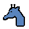
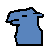

| A King can move to any adjacent square, but never to a square where it can be captured. Once each game, when in check, the King can swap places with any friendly piece. |
| A Vizir (Chancellor) can move horizontally or vertically one square at a time. |
| A Ferz (General) can move diagonally one square at a time. |
| A Bishop moves any number of squares on a diagonal, except it may not move exactly one square. Also, it may not leap over other pieces. |
| A Rook moves any number of squares orthogonally on a rank or a file. It may not leap over other pieces. |
| A Knight moves like an `L`, two squares vertically plus one horizontally, or two squares horizontally plus one vertically. It hops over any pieces on the way. |
|  | A Giraffe can move one square diagonally, then three or more squares in a straight line (ie. horizontally or vertically). It may not leap over occupied squares. |
|  | A Camel can move two squares straight followed by one square diagonally, like an elongated Knight's move. It may leap over occupied squares. |
| An Elephant can move diagonally two squares at a time, and is able to leap the intervening square if it is occupied. |
| A Dabbabah (War Machine) can move horizontally or vertically two squares at a time, and is able to leap the intervening square if it is occupied. |
| A Pawn can move straight ahead one square, or two squares from its starting position. A Pawn captures by moving one square ahead and diagonally. If a Pawn reaches the last rank it promotes, changing into the piece which started the game on the promotion square, or to a Prince when promoting on the King's square. |
DescriptionTimur's Chess (or Shatranj Al-Kabir -- Great Chess) is a chess variant played on a ten row by eleven column board. The game is played in a similar manner as orthodox chess, but with differing pieces and rules regarding stalemate. This is but one of several historical 'Great Chess' variants.The goal is to checkmate the oponent's King. If a player moves his King into his opponent's 'citadel' (the special squares branching off the 2nd and 9th rows), the opponent will have no way of checkmating the King since no other piece can move into the citadel, and the game may be declared a draw. Stalemate is considered a loss for the stalemated player. There is no castling or en passant. This version of Timur's chess does not implement some of the rather elaborate pawn promotion rules from the original game. For those interested in the complete rules, see John Gollon's 'Chess Variants: Ancient, Regional and Modern', John William Brown's 'Meta-Chess', and of course visit Hans Bodlaender's Chess Variants web pages (at http://www.chessvariants.com). HistoryPopular in 14th Century Persia. Named after the Mongol conqueror Timur (commonly known as Tamerlane -- a European corruption of 'Timur lenk', meaning 'Timur the lame'). More information on this game may be found in John Gollon's 'Chess Variations: Ancient, Regional, and Modern'. The game is also featured in John William Brown's 'Meta-Chess'.StrategyTBD.More information on Timur's Chess can be found at http://www.chessvariants.com/historic.dir/tamerlane.html. |